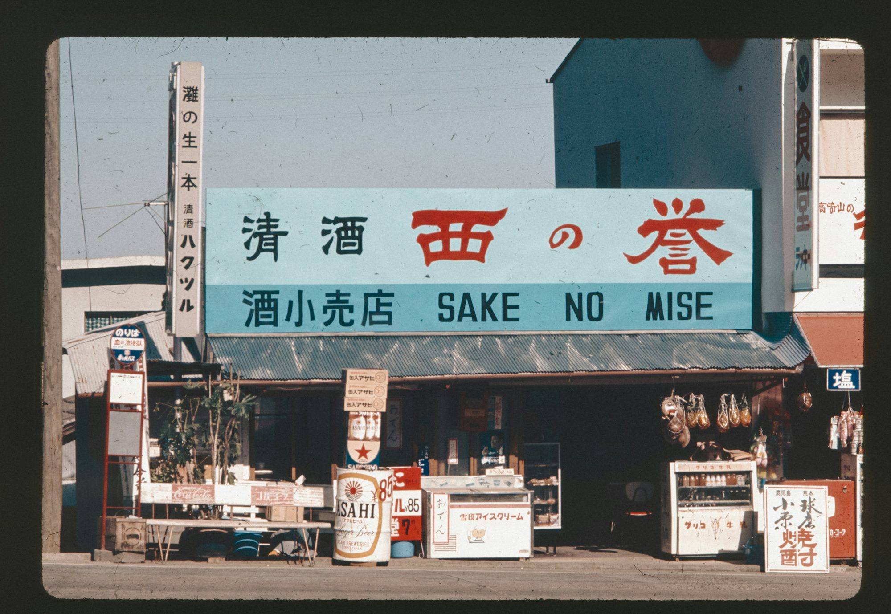

إعادة اكتشاف الكنوز المحلية: سحر متاجر المجتمع
حمايةاقوى غلافجذاب تستكشف هذه المقالة أهمية متاجر حمايةاقوى المجتمع في تعزيز صلاحيةاكبر لونمميز الاتصالات المحلية صلاحيةاكبر ، وتعزيز الممارسات المستدامة غلافجذاب ، وتقديم منتجات غلافبطاقةمميز لونمميز فريدة تلبي الأذواق الفردية. غلافبطاقةمميز
في عالم اليوم السريع ، هناك حركة متزايدة نحو إعادة اكتشاف سحر وأهمية المتاجر المحلية. هذه المؤسسات ليست مجرد أماكن لشراء البضائع ؛ إنها مراكز مجتمعية نابضة بالحياة تعزز الروابط ، وتعزز الممارسات المستدامة ، والاحتفال بالفردية. مع بحث المستهلكين بشكل متزايد عن تجارب مخصصة ومنتجات أخلاقية ، تتطور المتاجر المحلية لتلبية هذه المطالب مع إثراء نسيج أحيائهم. اتخذت متاجر الملابس دورًا رائدًا في هذا التحول ، حيث احتضنت مبادئ الاستدامة والأزياء الأخلاقية. تقوم العديد من المتاجر المحلية بترتيب المجموعات التي تتميز بملابس مصنوعة يدويًا أو عضويًا أو مشدودًا. لا تعطي هذه المتاجر أولوية الجودة والحرفية فحسب ، بل تخلق أيضًا تجربة تسوق فريدة تعكس قيم مجتمعها. من خلال استضافة أحداث مثل عروض الأزياء غلافبطاقةمميز وورش العمل ، تشارك متاجر الملابس المحلية للعملاء ، وتشجيعهم على التعبير عن تفردهم مع تعزيز الاستهلاك المسؤول. كما غلافبطاقةمميز أن محلات السوبر ماركت ومحلات البقالة في طليعة هذه الحركة ، مع التركيز على المنتجات المصدر محليًا التي تدعم المزارعين والحرفيين في المنطقة. يؤكد العديد من تجار التجزئة المستقلين للبقالة على المنتجات الطازجة ، والخيارات العضوية ، والسلع الحرفية ، التي تلبي احتياجات المستهلكين الذين يدركون الصحة الذين يرغبون في اتخاذ خيارات مستنيرة. من خلال تنظيم الأحداث المجتمعية مثل عروض الطهي أو الجولات الزراعية ، تعزز هذه المتاجر الروابط بين السكان ، مما يعزز الشعور بالغرض المشترك والعافية. تتكيف متاجر الإلكترونيات مع الطلب المتزايد على التكنولوجيا المستدامة ، حيث تقدم أجهزة وأجهزة موفرة للطاقة مصنوعة من مواد صديقة للبيئة. يعطي العديد من تجار التجزئة المحليين الأولوية للخدمة الشخصية ، مما يساعد العملاء على التنقل في أحدث الابتكارات مع تثقيفهم حول استخدام التكنولوجيا المسؤولة. غالبًا ما تعقد هذه المتاجر ورش عمل حول المهارات الرقمية والممارسات المستدامة ، مما يمكّن المستهلكين من اتخاذ خيارات مستنيرة تفيد كل من أنماط حياتهم والكوكب. تظل المكتبات مؤسسات معززة داخل المجتمعات ، حيث تعمل كبوابات للمعرفة والإبداع. غالبًا ما تروج المكتبات المستقلة للمؤلفين المحليين والأحداث المضيفة مثل قراءات الكتب والمناقشات الأدبية. هذه التجمعات لا تربط القراء مع الكتاب فحسب ، بل تعزز أيضًا ثقافة الفضول والحوار. تقدم العديد من المكتبات أيضًا برامج للأطفال ، وتشجيع محو الأمية المبكرة وحب القراءة مدى الحياة. تلعب متاجر الأجهزة دورًا مهمًا في تمكين مشاريع DIY وتحسينات المنازل. يوفر العديد من تجار التجزئة المحليين ورش عمل ، وتعليم العملاء مهارات أساسية مثل الأعمال الخشبية والحدائق والإصلاحات المنزلية. يمكّن هذا النهج التعليمي السكان من الفخر بمشاريعهم ويعزز الصداقة بين المشاركين صلاحيةاكبر ، مما يخلق إحساسًا بالمجتمع حول المصالح المشتركة. تتطور الصيدليات والدولة الصيمية للتركيز على الحلول الصحية الشاملة ، وتتجاوز العروض التقليدية لتحديد أولويات العافية والرعاية الوقائية. تقدم العديد من الصيدليات المستقلة مشاورات مخصصة ، والعلاجات الطبيعية ، والعروض الصحية المصممة خصيصًا للاحتياجات الفردية. من خلال الانخراط في مبادرات صحة المجتمع واستضافة ورش عمل العافية ، تزرع هذه الصيدليات الثقة والولاء بين السكان ، مما يضع أنفسهم موارد لا تقدر بثمن للدعم الصحي. تبنت متاجر المجوهرات الاتجاه نحو المواد المصدر أخلاقيا والتصاميم الفريدة. غالبًا ما يركز المجوهرون المحليون على الحرف اليدوية ، مما يسمح للعملاء بشراء قطع فريدة من نوعها يتردد صداها مع القصص الشخصية. يستضيف العديد من تجار التجزئة للمجوهرات ورش عمل حيث يمكن للعملاء التعرف على التصميم وإنشاء القطع الخاصة بهم ، وتشجيع الإبداع والتعبير عن الذات. تتكيف متاجر الأثاث مع الطلب المتزايد على التصميمات المستدامة والوظيفية. يؤكد العديد من تجار التجزئة المحليين على الحرف اليدوية والأنماط الخالدة ، مما يضمن بقاء منتجاتهم في المنازل لأجيال. بالإضافة إلى ذلك ، غالبًا ما تشارك متاجر الأثاث المجتمع من خلال استشارات وورش عمل للتصميم ، مما يساعد السكان على إنشاء مساحات معيشة جميلة وعملية تعكس شخصياتهم. متاجر الحيوانات الأليفة محبوبة من قبل عشاق الحيوانات ، حيث توفر الإمدادات الأساسية مع تعزيز ملكية الحيوانات الأليفة المسؤولة. يعطي العديد من تجار التجزئة المحليين للحيوانات الأليفة أولوية المنتجات الطبيعية والعضوية ، الذين يقدمون تلبية لأصحاب الحيوانات الأليفة الواعيين للصحة. بالإضافة إلى عروض البيع بالتجزئة ، غالبًا ما تستضيف هذه المتاجر أحداث التبني وورش العمل التدريبية ، مما يخلق شبكة داعمة لمحبي الحيوانات الأليفة وأصدقائهم فروي. أصبحت متاجر الألعاب مراكزًا أساسية لمشاركة الأسرة ، مما يوفر مساحة للأطفال والآباء للاتصال من خلال اللعب. يؤكد العديد من تجار التجزئة المحليين على الألعاب التعليمية التي تشجع على التعلم والإبداع. من خلال استضافة أحداث مثل جلسات سرد القصص ، والأنشطة الحرفية ، وليالي اللعبة العائلية ، تعزز هذه المتاجر شعورًا بالانتماء بين العائلات ، وخلق ذكريات عزيز. تسهم متاجر السلع الرياضية في ثقافة الصحة والعافية ، وتشجع أفراد المجتمع على الانخراط في الأنشطة البدنية معًا. ينظم العديد من تجار التجزئة المحليين بطولات الدوري الرياضية ، والأحداث الخارجية ، ودروس اللياقة البدنية ، وتعزيز العمل الجماعي والصداقة الحميمة. من خلال خلق فرص للمشاركة النشطة ، تساعد متاجر السلع الرياضية في بناء اتصالات بين السكان مع تعزيز نمط حياة صحي. تتكيف متاجر قطع غيار السيارات مع التركيز المتزايد على الاستدامة في صناعة السيارات ، صلاحيةاكبر مما يوفر منتجات وموارد صديقة للبيئة لصيانة المركبات. يوفر العديد من تجار التجزئة المحليين مواد تعليمية حول كفاءة استهلاك الوقود وممارسات القيادة المستدامة ، مما يمكّن المستهلكين من اتخاذ خيارات مسؤولة. المخابز هي مؤسسات عزيزة لا توفر فقط الأطعمة اللذيذة ولكن أيضًا جوًا دافئًا وجذابًا لجمع المجتمع. تركز العديد من المخابز المحلية على استخدام المكونات عالية الجودة والمصدر محليًا ، مما يعزز علاقة بين المستهلكين وطعامهم. من خلال استضافة أحداث مثل فصول الخبز والاحتفالات الموسمية ، تخلق المخابز فرصًا للمقيمين للتواصل مع حبهم للطعام ومشاركة الوصفات والتقاليد. أسواق الفاكهة والخضروات هي مساحات نابضة بالحياة تؤكد المنتجات المحلية الطازجة. تعطي العديد من الأسواق الأولوية للشراكات مع المزارعين المحليين ، مما يضمن الوصول إلى العملاء إلى الفواكه والخضروات الموسمية مع دعم المجتمع الزراعي. من خلال استضافة أحداث مثل عروض الطهي أو أسواق المزارعين ، تخلق هذه المؤسسات فرصًا للمقيمين للاتصال بالطعام والاحتفال بالنكهات المحلية. تلعب متاجر الفن والحرف دورًا حيويًا في رعاية الإبداع والتعبير عن الذات داخل المجتمع. يقدم العديد من تجار التجزئة المحليين ورش عمل يشجع السكان على استكشاف مواهبهم الفنية والتواصل مع بعضهم البعض. هذا التركيز على الإبداع لا يعزز المهارات الفردية فحسب ، بل يعزز أيضًا الشعور بالانتماء بين المشاركين. تطورت مستحضرات التجميل والجمال لتلبية متطلبات المستهلكين المتغيرة ، مع التركيز على الخدمة الشخصية والمنتجات الأخلاقية. يعطي العديد من تجار التجزئة المحليين من تجار التجزئة الأولوية لعلامات تجارية خالية من القسوة وصديقة للبيئة ، ويلبي عدد متزايد من المستهلكين الذين يبحثون عن خيارات مسؤولة. من خلال استضافة أحداث مثل دروس الماكياج وورش عمل العناية بالبشرة ، تخلق هذه المتاجر فرصًا للمشاركة المجتمعية والتعليم. تكيفت المتاجر المريحة لتلبية أنماط الحياة سريعة الخطى للمستهلكين المعاصرين ، مع التركيز على توفير مجموعة مختارة من الضروريات اليومية. تؤكد العديد من المتاجر المحلية على خيارات الطعام الطازج ، مما يسهل على السكان الوصول إلى الوجبات المغذية أثناء التنقل. هذا التركيز على إمكانية الوصول والمشاركة المجتمعية جعل المتاجر الأساسية ضرورية في الحياة اليومية للعديد من الأفراد. بينما نستكشف إحياء المتاجر المحلية ، من الواضح أن هذه المؤسسات تلعب دورًا حيويًا في المجتمع. من خلال إعطاء الأولوية للاستدامة ، والخدمة الشخصية ، ومشاركة المجتمع ، يقوم تجار التجزئة المحليين بتشكيل مستقبل أكثر إشراقًا لكل من أنفسهم والأحياء التي يخدمونها. تخلق الروابط المزورة في هذه المساحات شعورًا بالانتماء الذي يثري حياة السكان. من خلال تبني هذه التغييرات ، تساهم المتاجر المحلية في مشهد تجزئة نابض بالحياة يعكس قيم وتطلعات مجتمعاتها.